Tracing Data End-to-End & Problem Solving WiFi.id
Panduan penelusuran alur transmisi paket data lengkap (hop-by-hop packet flow), analisis perintah diagnostik CLI riil lapangan, dan blueprint konfigurasi jaringan (provisioning lab) dari titik fisik AP hingga Core Gateway. Berdasarkan studi kasus AP WMS Warkop Koramil (MAC: C8:28:E5:8A:EE:18).
Tracing end-to-end dari AP → ONT → GPON (OLT) → METRO AKSES → METRO CORE → SWAGGR (L3) → WAC (WLC) → WAG (BNG) → PE / BRAS CORE INTERNET telah 100% terekam dan terverifikasi secara presisi dengan datek CLI live lapangan dari DATIN ROC (Mas Adi Sudarto).
Profil Lengkap AP Studi Kasus Tracing
Topologi End-to-End Tracing WiFi.id (9 Hops Pipeline)
Matriks Lengkap Jalur Port, VLAN, MAC Address, Uplink & Downlink (9 Hops)
Peta komprehensif jalur fisik, port interface, enkapsulasi VLAN masuk/keluar, dan resolusi MAC address dari Access Point hingga Core Internet Gateway BRAS.
| Hop & Perangkat | Jalur Ingress (Downlink) | Jalur Egress (Uplink) | Identitas Jaringan (MAC / IP) | Peer Target & Status |
|---|---|---|---|---|
|
01
AP Cisco C9105AXI-F
Venue Warkop Koramil
|
Radio RF 2.4/5GHz
Untagged Wi-Fi 6 802.11ax
|
LAN RJ45 (PoE In)
Untagged 1000Base-T Copper
|
c8:28:e5:8a:ee:18
IP: 10.5.130.154 • SN: FGL2702LHYR
|
ONT ZTE F670L
Port LAN: eth_0/1
UP (1G)
|
|
02
ONT ZTE F670L
CPE Modem Venue
|
eth_0/1 (Gigabit RJ45)
VLAN 195 Tagged via OMCI
|
Port Optik PON SC/UPC
Tx 1310nm / Rx 1490nm Laser • TCONT 1
|
SN: ZTEGC80E6E92
Forwarding AP MAC .ee18 • Dropcore 6.3 Km
|
GPON OLT C300v2
gpon-onu_1/8/16:7
ONLINE
|
|
03
OLT ZTE C300v2
GPON04-D5-GSK-3 (Gresik)
|
gpon_1/8/16:7
VLAN 195 service-port 3 vport 1
|
smartgroup1 (20G LAG)
VLAN 195 Tagged Uplink Trunk
|
c828.e58a.ee18
Tercatat di MAC table Slot 8 • 0 CRC
|
ME-D5-GSK-3 (Huawei)
Port: Eth-Trunk2
UP (20G)
|
|
04
ME Akses Huawei CX600
ME-D5-GSK-3 (STO Gresik)
|
Eth-Trunk2.195
VLAN 195 dot1q-termination
|
MPLS PW LDP Tunnel
VSI 245132851 WIFI_6_SBU_2851
|
c828.e58a.ee18
Peer IP Core: 172.31.64.106
|
ME9-D5-KBL (Kebalen)
MPLS LDP Core Tunnel
FORWARD
|
|
05
ME Core Tier-1 CX600
ME9-D5-KBL (STO Kebalen)
|
MPLS LDP Ingress
VSI 245132851 Dari IP 172.31.64.15
|
Eth-Trunk23.2851
VLAN 2851 dot1q termination
|
c828.e58a.ee18
Forwarding ke Eth-Trunk23
|
SWAGGR-D5-KBL-CS
Port-channel10 (Te1/0/1-2)
UP (20G)
|
|
06
SWAGGR-D5-KBL-CS
Cisco Catalyst 6800 L3
|
Port-channel10 (20G)
VLAN 2851 VL_AP_WLC02_KBL_WIFI6
|
Te1/0/7 (To WAG) & Te1/0/4
SVI 10.5.130.1/23 • Lo85402 • Vl535
|
c828.e58a.ee18 DYNAMIC Po10
SVI: f4bd.9e32.8755 • IP: 10.5.130.154
|
WAG-D5-KBL & WLC02
WAG: GE6/0/0 • WLC: Port 1
L3 GATEWAY
|
|
07
WLC02-D5-KBL-CS
Cisco 8540 AireOS
|
Port 1 (10G SFP+)
VLAN 4035 & 2851 CAPWAP UDP
|
Dynamic telkom.id-wag
VLAN 1378 & 1372 IP: 172.17.67.3
|
c828.e58a.ee18
IP AP: 10.5.130.154 • NAT: .118
|
WAG-D5-KBL (Huawei)
GE6/0/0.1378 & .1382
REG (UP)
|
|
08
WAG-D5-KBL (BNG)
Huawei ME60 Gateway
|
GE6/0/0 (10G Trunk)
10 Sub-interfaces .1372, .1382, .1370..
|
GE1/0/0, 4/0/0, 7/1/0
Routed HSI IP 3x Uplink Trunks
|
Subscriber MAC Table
Per-MAC QoS • CoA 3799 • BAS Domain
|
PE-D5-KBL-HSI
Ports: 654, 600, 678
ONLINE
|
|
09
PE-D5-KBL-HSI
Core Internet Router
|
Ports 654, 600, 678
VLAN 535 / P2P Core Subscriber Streams
|
Backbone WAN (100G)
eBGP Default Transit AS7713 Core
|
CGNAT Session Translation
Public IP Pool Allocation
|
Global Internet & AAA
welcome2.wifi.id (WPGEN)
CORE BGP
|
Bedah Alur Tracing End-to-End: Kenapa & Bagaimana Paket Berpindah
Penjelasan komprehensif logika transmisi data, enkapsulasi VLAN, translasi MPLS Pseudowire, dan peran masing-masing node dari perspektif Network Engineer operasional ROC Telkom.
Level Access (AP ke ONT): Logika Penentuan VLAN Berdasarkan Serial Number AP
Saat Access Point Cisco C9105AXI-F dinyalakan, AP ditenagai melalui PoE adaptor atau switch lokal dan kabel UTP terhubung ke port LAN ONT ZTE F609 (eth_0/1). Di jaringan WiFi.id ROC 5, terdapat standarisasi pemetaan VLAN AP berdasarkan prefix Serial Number:
Pada konfigurasi ONT (pon-onu-mng gpon-onu_1/8/16:7), port eth_0/1 dan eth_0/2 diset mode tag vlan 195. Semua frame ethernet dari AP otomatis di-tag dengan dot1q 195 saat masuk ke ONT.
Level GPON / OLT: TCONT, GEMPORT, dan Uplink 10GE Trunking
ONT ZTE F609 mentransmisikan traffic VLAN 195 melalui laser optik (1310nm upstream) via kabel dropcore sepanjang 6.332 meter menuju splitter dan masuk ke line card OLT ZTE C300v2 (gpon-onu_1/8/16:7).
Di OLT, alur data dibungkus dalam gemport 1 tcont 1 dengan profil downstream 100 Mbps (DOWN-112640KB0). Perintah service-port 3 vport 1 user-vlan 195 vlan 195 memetakan GEMPORT virtual port 1 langsung ke VLAN 195 OLT. OLT kemudian meneruskan frame tagged 195 ini ke port uplink 10 Gigabit Ethernet xgei_1/10/1 (anggota smartgroup1, BW 20 Gbps) menuju Switch Metro Akses. Hasil pengecekan interface mencatat 0 CRC-ERROR dan 0 Drop, membuktikan fisik fiber optik OLT ke Metro sangat sehat.
Level Metro Ethernet: Mengapa VLAN 195 di OLT Berubah Menjadi VLAN 2851 di SWAGGR?
Ini adalah poin arsitektur paling kritikal: VLAN 195 dari sisi OLT tidak langsung di-bridging secara L2 murni ke SWAGGR. Melainkan dilewatkan melalui MPLS L2VPN (Virtual Private Wire Service / VSI):
-
Metro Akses (ME-D5-GS, Gresik): Menerima frame dari OLT pada sub-interface
Eth-Trunk2.195(PEVLAN 195). Sub-interface ini di-binding ke Virtual Switch Instance:vsi WIFI_6_SBU_2851(vsi-id: 245132851). Metro Akses membungkus frame ke dalam MPLS tunnel via LDP peer ke IP172.31.64.106(Metro Core Kebalen). -
Metro Core Tier-1 (ME9-D5-KBL, STO Kebalen Surabaya): Menerima paket MPLS dari IP
172.31.64.15, mencocokkan vsi-id 245132851, melepas label MPLS, lalu menyalurkannya keluar melalui port downlinkEth-Trunk23.2851dengan tag dot1q 2851. -
Dengan demikian, nama instance VSI
WIFI_6_SBU_2851secara eksplisit menandakan bahwa seluruh stream AP WiFi 6 Witel Surabaya Utara yang masuk dari berbagai OLT cabang dialirkan menjadi VLAN agregasi 2851.
Level SWAGGR: Bukti Bahwa SWAGGR-D5-KBL-CS Adalah Switch Layer 3 Murni
SWAGGR menerima trunk 10G dari Metro Core pada Port-channel10 (anggota interface Te1/0/1 dan Te1/0/2). Pertanyaan operasional: "Apakah SWAGGR ini Switch Layer 3?". Jawabannya adalah YA, MUTLAK LAYER 3, berdasarkan bukti teknis berikut:
Vlan2851 aktif dengan alamat IP 10.5.130.1/23. SVI ini bertindak sebagai Default Gateway bagi seluruh AP di subnet 10.5.130.0/23. Switch L2 murni tidak memiliki routing engine SVI untuk subnet host client.show ip arp c828.e58a.ee18 menghasilkan binding Layer 3: 10.5.130.154 ↔ c828.e58a.ee18 (Vlan2851). Tabel ARP adalah mekanisme Layer 3 yang menghubungkan Network Layer (IP) ke Data Link Layer (MAC).10.16.56.131 di VLAN 4035) via tabel routing internal CEF (Cisco Express Forwarding).show spanning-tree summary membuktikan SWAGGR bertindak sebagai Root Bridge untuk 43 VLAN, mengelola seluruh broadcast domain AP di regional Kebalen.Level WAC (Controller): Pembentukan CAPWAP Tunnel & AP Grouping
Setelah AP mendapatkan IP 10.5.130.154 via DHCP (diteruskan oleh SWAGGR), AP mengirimkan paket CAPWAP Discovery Request ke alamat IP Primary Controller 10.16.56.131 (WLC02-D5-KBL-CS).
WLC menerima koneksi pada port UDP 5246 (Control) dan 5247 (Data), memvalidasi sertifikat AP, mendownload konfigurasi firmware versi 8.10.196.0, dan menetapkan status Operational Status: REG (Registered). Di WLC, AP dimasukkan ke dalam AP Group: WARKOP_KORAMIL, yang memancarkan 3 SSID: @wifi.id, seamless@wifi.id, dan SSID private kustom WARKOP KORAMIL@WIFI.ID.
Kartu Diagnostik, CLI Pengecekan Eksploratif, & Gambar Bukti
HOP 01 · Access Point (Cisco C9105AXI-F)
GSGSK00415/TLK-WI31871627-0001 • MAC: C8:28:E5:8A:EE:18
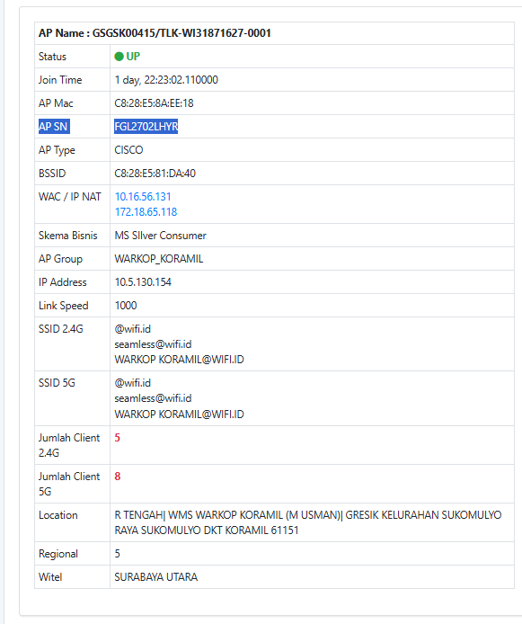
HOP 02 · Modem Optical Network Terminal (ONT ZTE F609)
SN: ZTEGCF054F69 • Port OLT: gpon-onu_1/8/16:7 • Jarak: 6332m
Pada output show gpon onu det gpon-onu_1/8/16:7, tercatat riwayat pemutusan:
GPON04-D5-GSK-3#show onu running config gpon-onu_1/8/16:7 pon-onu-mng gpon-onu_1/8/16:7 service gemport1 gemport 1 vlan 197 service VOIP gemport 2 vlan 100 service WMS2 gemport 1 vlan 195 voip protocol sip vlan port eth_0/1 mode tag vlan 195 <-- Port LAN 1 ONT tagged VLAN 195 (Konek ke Cisco AP FGL2702LHYR) vlan port eth_0/2 mode tag vlan 195 <-- Port LAN 2 ONT tagged VLAN 195 vlan port eth_0/3 mode tag vlan 197 <-- Port LAN 3 ONT tagged VLAN 197 (Untuk AP FGL17/18/KWC21) vlan port eth_0/4 mode tag vlan 196 dhcp-ip ethuni eth_0/1 from-internet dhcp-ip ethuni eth_0/2 from-internet dhcp-ip ethuni eth_0/3 from-internet dhcp-ip ethuni eth_0/4 from-internet veip 1 port udp 8080 host 2 tr069-mgmt 1 acs http://acs.telkom.net:9090/web/tr069 validate basic username CPE password CPE !
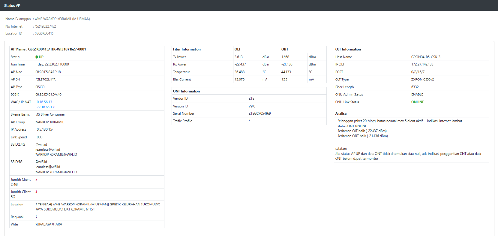
HOP 03 · Optical Line Terminal (ZTE ZXPON C300v2)
GPON04-D5-GSK-3 • IP: 172.27.142.133 • Uplink: xgei_1/10/1
GPON04-D5-GSK-3#show gpon onu state gpon-olt_1/8/16 OnuIndex Admin State OMCC State Phase State Channel -------------------------------------------------------------- 1/8/16:1 enable enable working 1(GPON) 1/8/16:2 enable enable working 1(GPON) 1/8/16:3 enable enable working 1(GPON) 1/8/16:4 enable disable DyingGasp 1(GPON) 1/8/16:5 enable enable working 1(GPON) 1/8/16:6 enable enable working 1(GPON) 1/8/16:7 enable enable working 1(GPON) <-- STATUS AP WARKOP KORAMIL SEHAT & AKTIF! 1/8/16:8 enable enable working 1(GPON) 1/8/16:9 enable enable working 1(GPON) 1/8/16:10 enable enable working 1(GPON) 1/8/16:38 enable enable working 1(GPON) ONU Number: 10/11 GPON04-D5-GSK-3#show gpon onu detail-info gpon-onu_1/8/16:7 ONU interface: gpon-onu_1/8/16:7 Name: WIFI.ID WIFI.ID Type: ZTEG-F609 State: ready Admin state: enable Phase state: working Config state: success Serial number: ZTEGCF054F69 Description: ONU-16:7 Vport mode: gemport ONU Distance: 6332m (6.332 Km dari STO Gresik) Online Duration: 100h 48m 40s ------------------------------------------ Authpass Time OfflineTime Cause 8 2026-10-26 09:44:21 2026-10-26 09:44:21 DyingGasp 9 2026-10-26 09:45:21 2026-11-04 08:33:59 LOS <-- Riwayat Gangguan Fisik Optik 10 2026-11-04 18:24:40 0000-00-00 00:00:00 <-- Normal & Online Sejak 4 Nov
1/8/16:7 berstatus working dengan waktu online nonstop 100+ jam. Riwayat kegagalan menunjukkan pernah mengalami Loss of Signal (LOS) pada 4 November 2026 dan pulih stabil pada hari yang sama pukul 18:24 WIB. Jarak tempuh optik presisi 6.332 meter.
GPON04-D5-GSK-3#show pon power attenuation gpon-onu_1/8/16:7
OLT ONU Attenuation
--------------------------------------------------------------------------
up Rx :-22.273(dbm) Tx:2.310(dbm) 24.583(dB)
down Tx :3.613(dbm) Rx:-21.192(dbm) 24.805(dB)
GPON04-D5-GSK-3#show gpon remote-onu interface eth gpon-onu_1/8/16:7
Interface : eth_0/1
Speed status : full-1000 (1 Gbps Full-Duplex)
Operate status : enable
Admin status : unlock
Max frame : 1632 (Mendukung VLAN Tagging 802.1Q)
Status changes : 2
Interface : eth_0/2 s/d eth_0/4
Operate status : disable (Port LAN 2, 3, 4 dinonaktifkan untuk keamanan venue)
eth_0/1 modem ZTE terhubung ke AP Cisco dengan negosiasi kecepatan penuh Gigabit full-1000.
GPON04-D5-GSK-3#show mac gpon onu gpon-onu_1/8/16:7 Total mac address : 2 Mac address Vlan Type Port Vc ------------------------------------------------------------------------------- c828.e58a.ee18 195 Dynamic gpon-onu_1/8/16:7 vport 1 <-- EXACT MATCH: MAC CISCO AP DI VLAN 195! 5446.178d.7dca 877 Dynamic gpon-onu_1/8/16:7 vport 2 <-- VLAN 877 MGMT / TR-069 ONT
c828.e58a.ee18) telah sukses masuk ke OLT melalui vport 1 pada VLAN 195. Vport 2 dialokasikan terpisah untuk VLAN 877 (manajemen modem via ACS/TR-069 Telkom).
GPON04-D5-GSK-3#show interface smartgroup1 smartgroup1 is up, line protocol is up, detect status is OK Description is ++++ To ME-D5-GS Trunk Uplink ++++ BW 20000000 Kbits (20 Gbps Agregasi 2x 10GE LACP) GPON04-D5-GSK-3#show vlan 195 vlanid :195 port(tagged): gpon-onu_1/8/16:7:1 <-- Ingress dari AP Warkop Koramil xgei_1/10/1-2 <-- Member Smartgroup 1 ke Metro Akses sg1 <-- Smartgroup 1 Trunking Tagged
ME-D5-GS melalui pipa agregasi optik berkecepatan 20 Gbps (smartgroup1).
HOP 04 · Metro Ethernet Akses (Huawei ME-D5-GS)
Host: <ME-D5-GS> • Port: Eth-Trunk2.195 • VSI: WIFI_6_SBU_2851
<ME-D5-GS>display vsi name WIFI_6_SBU_2851 verbose ***VSI Name : WIFI_6_SBU_2851 VSI ID : 245132851 VSI State : up PW Signaling : ldp Encapsulation Type : vlan MTU : 1500 *Peer Router ID : 172.31.64.106 (Metro Core Kebalen ME9-D5-KBL) VC Label : 53766 Session : up Tunnel ID : 0x0000000001004c791c Interface Name : Eth-Trunk2.195 <-- AC SUB-INTERFACE DARI OLT GRESIK! State : up Ac Block State : unblocked Last Up Time : 2026/09/16 00:37:40 Total Up Time : 1383 days, 6 hours, 43 minutes **PW Information: *Peer Ip Address : 172.31.64.106 PW State : up Local VC Label : 53766 Remote VC Label : 122693 OutInterface : Eth-Trunk162 (Trunk Core ke Kebalen) PW Total Up Time : 1414 days, 2 hours, 23 minutes
ME-D5-GS menerima frame VLAN 195 pada sub-interface Eth-Trunk2.195 (up selama 1.383 hari). Frame ini dibungkus ke dalam terowongan LDP L2VPN WIFI_6_SBU_2851 (VC ID: 245132851) menuju router Core Kebalen (172.31.64.106) menggunakan Local VC Label 53766 melalui interface Eth-Trunk162.
<ME-D5-GS>display mac-address vsi WIFI_6_SBU_2851 MAC address table of slot 1 s/d 3: ---------------------------------------------------------------------------------------------------------------------- MAC Address VLAN/BD/VSI/SI/EVPN PEVLAN CEVLAN Port/Peerip Type LSP/LSR-ID/MAC-Tunnel ---------------------------------------------------------------------------------------------------------------------- c828-e58a-ee18 WIFI_6_SBU_2851 195 - Eth-Trunk2.195 dynamic 1/- <-- AP KORAMIL! c828-e58b-bec8 WIFI_6_SBU_2851 195 - Eth-Trunk2.195 dynamic 1/- <-- AP Tetangga di Trunk2 7486-0b5a-1598 WIFI_6_SBU_2851 195 - Eth-Trunk2.195 dynamic 1/- <-- AP Tetangga di Trunk2 f4bd-9e32-8701 WIFI_6_SBU_2851 - - Eth-Trunk162 dynamic 1/132354 <-- MAC Core SWAGGR f4bd-9e32-8755 WIFI_6_SBU_2851 - - Eth-Trunk162 dynamic 1/132354 <-- MAC SVI SWAGGR ---------------------------------------------------------------------------------------------------------------------- Total matching items displayed = 96 APs (Terdistribusi di Slot 1, Slot 2, dan Slot 3)
c828-e58a-ee18) tercatat secara live dipelajari pada port Eth-Trunk2.195 di VLAN 195. Sementara itu, MAC switch SWAGGR di Kebalen (f4bd-9e32-8701) dipelajari melalui terowongan MPLS Eth-Trunk162 (Tunnel ID 132354). Hubungan dua arah ini membuktikan konektivitas L2VPN sempurna.
HOP 05 · Metro Ethernet Core Tier-1 (Huawei CX600-X16A)
Node: ME9-D5-KBL(TIER-1) • STO Kebalen, Witel SBU • Downlink: Eth-Trunk23
<ME9-D5-KBL-OLD>display vsi name WIFI_6_SBU_2851 verbose ***VSI Name : WIFI_6_SBU_2851 VSI ID : 245132851 VSI State : up PW Signaling : ldp *Peer Router ID : 172.31.64.15 (Metro Akses Gresik ME-D5-GS) Local VC Label : 122693 (Sinkron dengan Remote Label di Gresik!) Remote VC Label : 53766 (Sinkron dengan Local Label di Gresik!) Session : up Interface Name : Eth-Trunk23.2851 <-- DOWNLINK KE SWITCH SWAGGR PO10! State : up Ac Block State : unblocked Last Up Time : 2026/02/11 00:19:34 Total Up Time : 1413 days, 12 hours, 58 minutes **PW Information: *Peer Ip Address : 172.31.64.15 PW State : up OutInterface : Eth-Trunk105 (Trunk MPLS Core dari Gresik) PW Total Up Time : 1413 days, 12 hours
122693 dan Core Kebalen menerima dengan Local VC Label 122693. Paket kemudian didekapsulasi dan diserahkan ke sub-interface Eth-Trunk23.2851 menuju SWAGGR.
<ME9-D5-KBL-OLD>display mac-address vsi WIFI_6_SBU_2851 MAC address table of slot 1 s/d 5: ---------------------------------------------------------------------------------------------------------------------- MAC Address VLAN/BD/VSI/SI/EVPN PEVLAN CEVLAN Port/Peerip Type LSP/LSR-ID/MAC-Tunnel ---------------------------------------------------------------------------------------------------------------------- c828-e58a-ee18 WIFI_6_SBU_2851 - - Eth-Trunk105 dynamic 1/45960 <-- AP KORAMIL VIA PW! f4bd-9e32-8701 WIFI_6_SBU_2851 2851 - Eth-Trunk23.2851 dynamic 1/- <-- DOWNLINK KE SWAGGR f4bd-9e32-8755 WIFI_6_SBU_2851 2851 - Eth-Trunk23.2851 dynamic 1/- <-- DOWNLINK KE SWAGGR ---------------------------------------------------------------------------------------------------------------------- Total matching items displayed = 101 APs (Terdistribusi di Slot 1 s/d Slot 5)
c828-e58a-ee18 tiba melalui terowongan MPLS Pseudowire di interface Eth-Trunk105 (Tunnel 45960 dari Gresik), dan (2) Frame ditranslasikan ke VLAN 2851 dan diteruskan langsung ke interface fisik Eth-Trunk23.2851 menuju Po10 switch SWAGGR.
HOP 06 · Switch Aggregator Layer 3 (Cisco Catalyst)
SWAGGR-D5-KBL-CS • IP: 10.16.56.129 (NAT: 172.18.65.116) • SVI Vlan2851 • LAG Po10
SWAGGR bertindak sebagai sentral agregasi L3 di STO Kebalen. Menghentikan broadcast domain L2 dari Metro Core melalui link agregasi Port-channel10 (20 Gbps), menyediakan gateway IP 10.5.130.1/23 bagi seluruh AP WiFi 6 melalui SVI Vlan2851, dan menghubungkan trunking kontroler WLC ke Gateway WAG melalui port Te1/0/7.
SWAGGR-D5-KBL-CS#sho mac address-table vlan 2851
Mac Address Table
-------------------------------------------
Vlan Mac Address Type Ports
---- ----------- -------- -----
2851 0072.7828.1a88 DYNAMIC Po10
2851 0072.7828.2210 DYNAMIC Po10
2851 0072.782c.1a40 DYNAMIC Po10
2851 0072.782c.3798 DYNAMIC Po10
2851 0077.8dd6.17e8 DYNAMIC Po10
2851 00a5.bf72.5cc8 DYNAMIC Po10
2851 00b6.705e.1998 DYNAMIC Po10
2851 24d7.9c87.44c8 DYNAMIC Po10
2851 308b.b260.0998 DYNAMIC Po10
2851 345d.a848.2260 DYNAMIC Po10
2851 3891.b736.2aac DYNAMIC Po10
2851 488b.0a08.0490 DYNAMIC Po10
2851 7018.a714.6598 DYNAMIC Po10
2851 84f1.47bc.3d40 DYNAMIC Po10
2851 8c1e.8055.127c DYNAMIC Po10
2851 a0f8.497c.1140 DYNAMIC Po10
2851 c4b3.6a10.5c00 DYNAMIC Po10
2851 c828.e58a.5b2c DYNAMIC Po10
2851 c828.e58a.6128 DYNAMIC Po10
2851 c828.e58a.ee18 DYNAMIC Po10 <-- EXACT MATCH: MAC AP WARKOP KORAMIL TERDETEKSI DI Po10!
2851 c828.e58a.f95c DYNAMIC Po10
2851 c828.e58b.0de4 DYNAMIC Po10
2851 c828.e58b.aa24 DYNAMIC Po10
2851 c884.a148.0ec8 DYNAMIC Po10
2851 f4bd.9e32.8755 STATIC Vl2851 <-- Static SVI Hardware MAC SWAGGR
2851 fc44.9f0a.45c3 DYNAMIC Po10
Total Mac Addresses for this criterion: 99
SWAGGR-D5-KBL-CS#show ip arp c828.e58a.ee18
Protocol Address Age (min) Hardware Addr Type Interface
Internet 10.5.130.154 0 c828.e58a.ee18 ARPA Vlan2851 <-- IP Binding Sukses!
Po10, MAC target studi kasus kita c828.e58a.ee18 tercatat dengan status DYNAMIC di Po10. Ini membuktikan frame ethernet AP berhasil menempuh jalur OLT → Metro Akses → VSI MPLS Core → Po10 SWAGGR tanpa terbuang. Serta entri STATIC Vl2851 adalah MAC gateway SVI internal switch.
SWAGGR-D5-KBL-CS#show inter Po10 Port-channel10 is up, line protocol is up (connected) Hardware is EtherChannel, address is f4bd.9e32.8701 (bia f4bd.9e32.8701) Description: LAG-DOWNLINK-ME9-D5-KBL-Eth-23 MTU 1500 bytes, BW 20000000 Kbit/sec (20 Gbps), DLY 10 usec, reliability 255/255, txload 54/255, rxload 7/255 Encapsulation ARPA, loopback not set, Keepalive set (10 sec) Full-duplex, 10Gb/s, link type is auto, media type is N/A Members in this channel: Te1/0/1 Te1/0/2 5 minute input rate 572304000 bits/sec, 201216 packets/sec (~572 Mbps) 5 minute output rate 4247539000 bits/sec, 451603 packets/sec (~4.24 Gbps) 50991789523790 packets input, 47620257043403169 bytes 82307932805788 packets output, 589163247151913686 bytes 0 output errors, 0 collisions, 3 interface resets SWAGGR-D5-KBL-CS#show interfaces Te1/0/1 TenGigabitEthernet1/0/1 is up, line protocol is up (connected) Hardware is Ten Gigabit Ethernet, address is f4bd.9e32.8701 (bia f4bd.9e32.8701) Description: TO ME9-D5-KBL 1/1/19 MTU 1500 bytes, BW 10000000 Kbit/sec, DLY 10 usec, reliability 255/255 Full-duplex, 10Gb/s, media type is SFP-10GBase-LR 5 minute input rate 310677000 bits/sec, 5 minute output rate 1715151000 bits/sec 0 watchdog, 0 output buffer failures
Te1/0/1 dan Te1/0/2 (transceiver SFP-10GBase-LR 1310nm Long-Range) menjadi bandwidth agregat 20 Gbps. Output traffic 4.24 Gbps menunjukkan performa transmisi stabil tanpa botol leher (bottleneck).
SWAGGR-D5-KBL-CS#sho vlan bri
VLAN Name Status Ports
---- -------------------------------- --------- -------------------------------
1 default active Te1/0/5, Te1/0/6, Te1/0/8
Te1/0/9, Te1/0/10, Te1/0/12
535 p2p-PE active <-- P2P Peering ke Core PE Router
580 VLAN-P2P-WC-U17-TEMP active
1102 seamless@wifi.id-internet active <-- VLAN Klien Seamless EAP-SIM
1245 ssid_iot active <-- VLAN Khusus Perangkat IoT Venue
1370 ssid_wifi.id active <-- VLAN Klien Publik @wifi.id Voucher
1372 ssid_wms active <-- VLAN Klien WMS Reguler Venue
1378 telkom.id-wag active <-- VLAN Uplink Interface ke WAG Gateway
1379 SSID_seamless active
1382 ssid_wms_WAG-KBL active <-- VLAN Direct WMS WAG Kebalen
2850 VL_AP_WLC02_KBL_WIFI6_2850 active Te1/1/3
2851 VL_AP_WLC02_KBL_WIFI6_2851 active <-- POOL VLAN AP KITA (WARKOP KORAMIL)
2852 VL_AP_WLC02_KBL_WIFI6_2852 active
2853 VL_AP_WLC02_KBL_WIFI6_2853 active
2854 VL_AP_WLC02_KBL_WIFI6_2854 active
2855 VL_AP_WLC02_KBL_WIFI6_2855 active
2856 VL_AP_WLC02_KBL_WIFI6_2856 active
2860 VLANAP2860_WLC01_KBL active
2861 VLANAP2861_WLC02_KBL active
2862-2875 VL_AP_WLC02_KBL_WIFI6_* active
2880-2885 VL_AP_WLC02_KBL_WIFI6_* active
2890-2895 VL_AP_WLC02_KBL_WIFI6_* active
4035 MGMT active Te1/1/1, Te1/1/2, Te1/1/4 <-- Management WLC
4090 MGMT-PROCERA active <-- Management Procera DPI (Down)
SWAGGR-D5-KBL-CS#show inter description Interface Status Protocol Description Vl1 admin down down Vl535 up up SWAGGR to PE P2P Vl580 up up Vl2850 up up INT-VL_AP_WLC02_KBL_WIFI6_2850 Vl2851 up up INT-VL_AP_WLC02_KBL_WIFI6_2851 <-- SVI AP Subnet Vl2860 up up VLAN_AP_2860_WLC01_KBL Vl2861 up up VLAN_AP_2861_WLC02_KBL Vl4035 up up MGMT Vl4090 down down MGMT-PROCERA Gi0/0 admin down down Te1/0/1 up up TO ME9-D5-KBL 1/1/19 <-- Member Po10 Te1/0/2 up up TO ME9-D5-KBL 1/1/21 <-- Member Po10 Te1/0/3 up up TO WLC01-D5-KBL-CS Port 1 Te1/0/4 up up TO WLC02-D5-KBL-CS Port 1 Te1/0/5 down down Te1/0/6 down down Te1/0/7 up up To WAG-D5-KBL Te 6/0/0 <-- UPLINK KE WAG GATEWAY! Te1/0/8 - Te1/0/11 down down Te1/0/12 down down to-SW-NEXUS-PROCERA Te1/1/1 up up TO WAC05-D5-KBL-CS Port MGMT <-- VLAN 4035 Te1/1/2 up up TO WAC06-D5-KBL-CS Port MGMT <-- VLAN 4035 Te1/1/3 down down Te1/1/4 down down Po10 up up LAG-DOWNLINK-ME9-D5-KBL-Eth-23 <-- 20G Trunk ME9 Lo85401 up up WLC01-D5-KBL-CS Port2 to WAG-D5-KBL Te 4/1/0 Lo85402 up up WLC02-D5-KBL-CS Port2 to WAG-D5-KBL Te 6/0/0
Te1/0/7 menyambung langsung ke WAG-D5-KBL Te 6/0/0, sedangkan loopback inter-VRF Lo85402 menghubungkan traffic controller WLC02 ke WAG Te 6/0/0.
SWAGGR-D5-KBL-CS#sho lldp neighbors Device ID Local Intf Capability Port ID ME9-D5-KBL-OLD Te1/0/2 B,R GigabitEthernet1/1/21 ME9-D5-KBL-OLD Te1/0/1 B,R GigabitEthernet1/1/19 WAG-D5-KBL Te1/0/7 B,R GigabitEthernet6/0/0 Total entries displayed: 3
Te1/1/1: UP (connected) • TO WAC05-D5-KBL-CS Port MGMT (1G) Te1/1/2: UP (connected) • TO WAC06-D5-KBL-CS Port MGMT (1G) Te1/1/3: DOWN (notconnect) • Last in: 6y40w • drops: 475k Te1/1/4: DOWN (notconnect) • Port SFP kosong Te1/0/5: DOWN (notconnect) • Port cadangan 10G
SWAGGR-D5-KBL-CS#show controllers utilization Port Receive Utilization Transmit Utilization Te1/0/1 2 15 Te1/0/2 2 22 Te1/0/3 1 0 Te1/0/4 40 39 # Trunk ke WLC02 (Port 1) • Beban Tertinggi! Te1/0/5 0 0 Te1/0/6 0 0 Te1/0/7 34 4 # Interkoneksi ke WAG (GE6/0/0) • Downlink Sub Te1/0/8 0 0 Te1/0/9 0 0 Te1/0/10 0 0 Te1/0/11 0 0 Te1/0/12 0 0 Te1/1/1 0 0 Te1/1/2 0 0 Te1/1/3 0 0 Te1/1/4 0 0 Total Ports : 16 Total Ports Receive Bandwidth Percentage Utilization : 5 Total Ports Transmit Bandwidth Percentage Utilization : 6 Average Switch Percentage Utilization : 5
- Port Te1/0/4 (Rx 40% / Tx 39%): Interface paling sibuk pada SWAGGR. Menghubungkan langsung ke WLC02-D5-KBL-CS Port 1 untuk mengalirkan seluruh tunnel data CAPWAP dari 8.909 klien aktif.
- Port Te1/0/7 (Rx 34% / Tx 4%): Menghubungkan ke gateway WAG-D5-KBL (GE6/0/0). Rx 34% mencerminkan aliran downstream dari internet gateway menuju pelanggan.
- Po10 (Te1/0/1 Tx 15% & Te1/0/2 Tx 22%): Distribusi transmit load balancing LACP 20G berjalan sangat seimbang (total Tx ~37%) menuju Metro Core ME9-D5-KBL.
- Average Switch Utilization 5%: Kapasitas switch Catalyst 6800 beroperasi sangat aman dengan sisa headroom 95%, membuktikan tidak ada packet drop atau saturasi hardware ASIC.
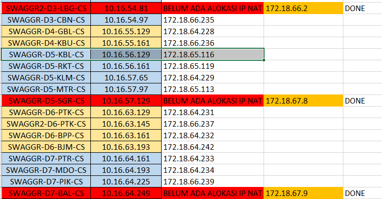
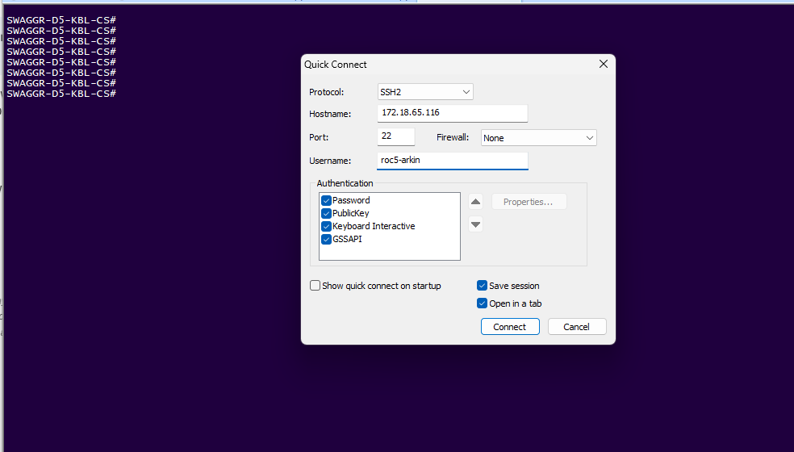
HOP 07 · Wireless LAN Controller (Cisco WAC / WLC)
WLC02-D5-KBL-CS • IP: 10.16.56.131 (NAT: 172.18.65.118) • AireOS v8.10.196.0
| Interface Name | VLAN ID | IP Address | Type | Tujuan / Service |
|---|---|---|---|---|
| management | 4035 | 10.16.56.131 | Static (AP Mgmt) | Terminasi Tunnel CAPWAP dari AP |
| seamless@wifi.id-internet | 1102 | 172.17.61.180 | Dynamic | SSID Seamless Auto-connect EAP-SIM |
| ssid_biz_direct | 208 | 172.17.61.212 | Dynamic | SSID Enterprise / Dedicated Direct |
| ssid_wifi.id | 1370 | 172.17.61.20 | Dynamic | SSID Publik @wifi.id (Voucher / Komunitas) |
| ssid_wms | 1372 | 172.17.61.52 | Dynamic | SSID Venue WMS Pelanggan |
| telkom.id-wag | 1378 | 172.17.67.3 | Dynamic | → Uplink Langsung ke HOP 08 (WAG Gateway) |
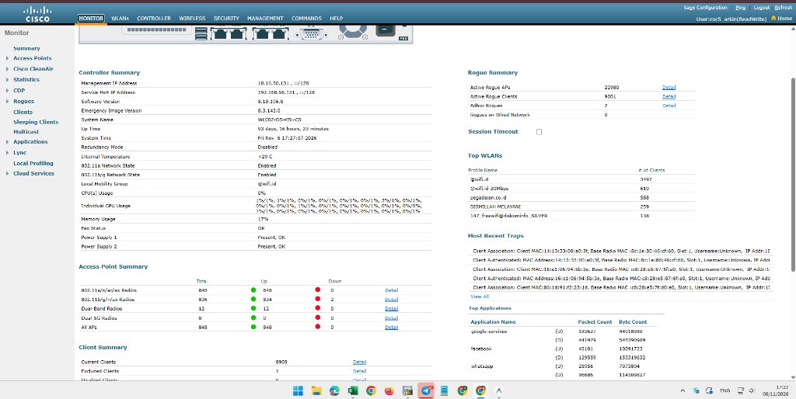
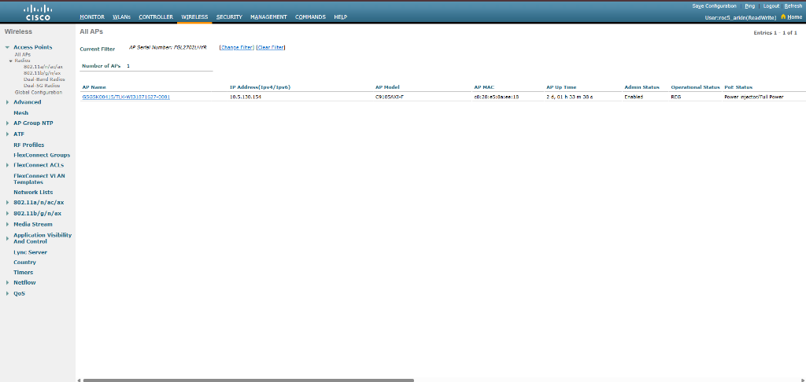
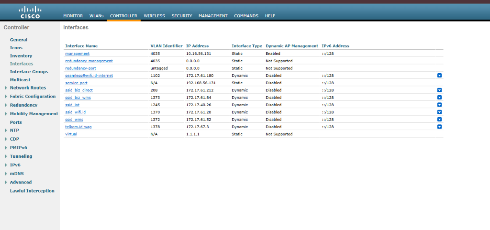
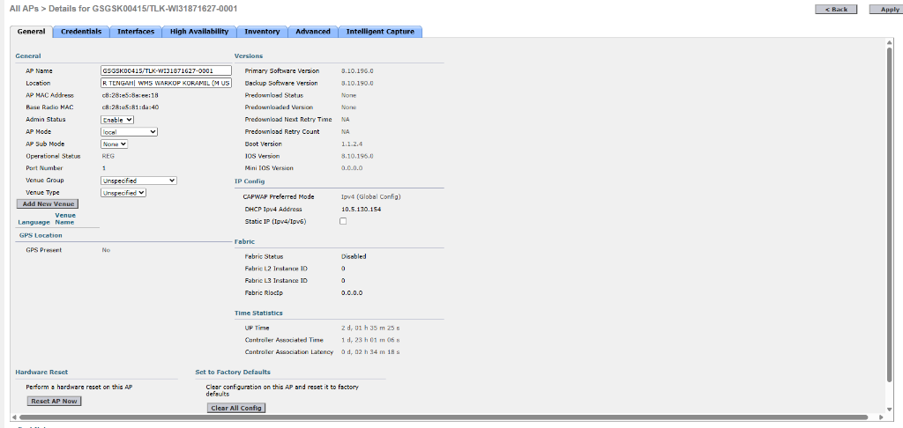
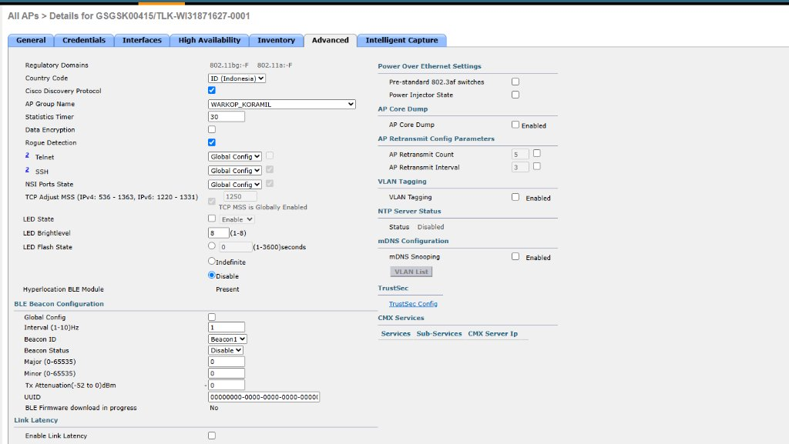
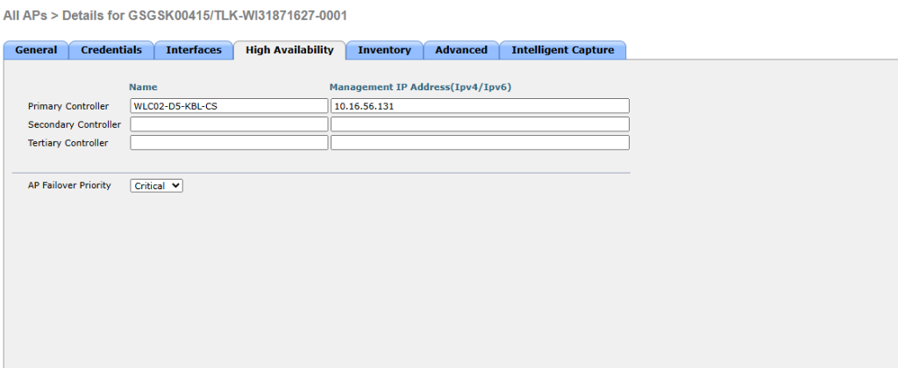
HOP 08 · Wireless Access Gateway (Huawei WAG / BNG)
WAG-D5-KBL • Huawei NE / ME60 Multiservice BNG • Downlink GE6/0/0 (10G) ke SWAGGR & WAC
WAG (Wireless Access Gateway) mengelola subscriber session, penegakan profil bandwidth QoS pelanggan (misal WMS 20 Mbps, WiFi.id 100 Mbps), menangani pesan Change of Authorization (CoA UDP 3799) dari RADIUS, dan mengisolasi traffic multi-SSID melalui sub-interface dot1q berkecepatan 10G.
WAG-D5-KBL>disp lldp neighbor brief Local Intf Neighbor Dev Neighbor Intf Exptime (sec) ------------------------------------------------------------------------------- GigabitEthernet1/0/0 PE-D5-KBL-HSI 654 104 <-- Core Uplink #1 GigabitEthernet1/1/0 ME9-D5-KBL-OLD GigabitEthernet3/1/22 113 GigabitEthernet2/0/0 WAC03-D5-KBL-CS.wifi.id Te1/2 94 GigabitEthernet2/1/0 ME9-D5-KBL-OLD GigabitEthernet11/1/6 111 GigabitEthernet3/1/0 WAC04-D5-KBL-CS.wifi.id Te1/3 117 GigabitEthernet4/0/0 PE-D5-KBL-HSI 600 99 <-- Core Uplink #2 GigabitEthernet6/0/0 SWAGGR-D5-KBL-CS.SWAGGRKBL.wifi.id Te1/0/7 109 <-- Downlink SWAGGR! GigabitEthernet6/1/0 WAC03-D5-KBL-CS.wifi.id Te5/4 92 GigabitEthernet7/0/0 L2SW-5KBL-HW01 XGigabitEthernet1/0/10 91 GigabitEthernet7/1/0 PE-D5-KBL-HSI 678 119 <-- Core Uplink #3 GigabitEthernet8/0/0 ME9-D5-KBL-OLD GigabitEthernet7/1/3 95 <WAG-D5-KBL>
GE6/0/0 menerima agregasi traffic SSID dari switch SWAGGR (Te1/0/7), interkoneksi langsung ke controller WAC03 & WAC04, dan memiliki 3 jalur redundan ke Core Internet Gateway PE-D5-KBL-HSI (port 654, 600, dan 678) untuk menjamin keandalan akses tanpa single-point-of-failure.
WAG-D5-KBL>disp inte des | in 6/0/0 Interface PHY Protocol Description GE6/0/0(10G) up down DOWNLINK TO WAC06-D5-KBL-CS GE6/0/0.208 up up ssid_biz_direct WLC02-D5-KBL-CS GE6/0/0.1101 up up SSID_seamless@wifi.id-internet TO WAC06-D5-KBL-CS GE6/0/0.1102 up up SSID_seamless@wifi.id-internet TO WLC02-D5-KBL-CS GE6/0/0.1245 up up WMS-AP x IoT GE6/0/0.1370 up up SSID_wifi.id TO WAC06-D5-KBL-CS GE6/0/0.1372 up up SSID_wms TO WAC06-D5-KBL-CS GE6/0/0.1373 up up ssid_biz_wms WLC02-D5-KBL-CS GE6/0/0.1378 up up SSID_telkom.id TO WLC01-D5-KBL-CS GE6/0/0.1382 up up SSID_WMS to WLC02-D5-KBL-CS direct WAG
•
GE6/0/0.1372 & GE6/0/0.1382: Menampung traffic pelanggan SSID WMS (Warkop Koramil).
•
GE6/0/0.1370: Menampung traffic publik SSID @wifi.id dengan otentikasi portal voucher.
•
GE6/0/0.1101 / .1102: Menampung traffic pelanggan seluler seamless@wifi.id via EAP-SIM.
•
GE6/0/0.1378: Menghubungkan dynamic interface telkom.id-wag WLC (Hop 07) untuk otentikasi internal.
> ssh WAG-D5-KBL
The authenticity of host 'wag-d5-kbl (11.1.45.2)' can't be established.
RSA key fingerprint is SHA256:SuVkynil86L6jebRqHgv9WpgqSe+7uRHSKh8cqXK9QQ.
Warning: Permanently added 'wag-d5-kbl,11.1.45.2' (RSA) to the list of known hosts.
Info: The max number of VTY users is 20, and the number of current VTY users on line is 1.
The current login time is 2026-11-08 23:23:49+07:00.
<WAG-D5-KBL>display access-user interface GigabitEthernet 6/0/0.1378
Info: No online user!
Info: No online user! pada sub-interface GE6/0/0.1378 adalah kondisi wajar di luar jam sibuk (pukul 23:23 WIB malam) saat pengunjung kedai kopi telah meninggalkan venue dan timer inaktivitas BNG Huawei ME60 telah menghapus lease sesi aktif sementara. Ketika user terhubung kembali dan menginput sandi venue di captive portal, WAG akan langsung menerima pesan RADIUS CoA (UDP 3799) dan membuat entri subscriber baru secara dinamis.
HOP 09 · Internet Core Gateway (PE / BRAS & AAA Portal WPGEN)
PE-D5-KBL-HSI • Provider Edge Router • 3x Interconnect Trunks dari WAG-D5-KBL • AAA welcome2.wifi.id
PE-D5-KBL-HSI adalah gerbang keluar Tier-1 yang menghubungkan seluruh subscriber WiFi.id Regional 5 menuju jaringan internet global. Menyediakan pool IP publik via Carrier-Grade NAT (CGNAT), routing default BGP ke Core Backbone Telkom, serta integrasi redirection HTTP ke Captive Portal Engine welcome2.wifi.id (WPGEN).
Saat HP klien terhubung ke SSID WMS/WiFi.id tapi belum login, paket HTTP port 80 dicegat oleh WAG-D5-KBL. WAG mengembalikan respon HTTP 302 Redirect ke portal.
Browser membuka welcome2.wifi.id. Klien memasukkan voucher/password. Engine WPGEN memverifikasi kredensial ke Server RADIUS AAA.
RADIUS mengirimkan paket Change of Authorization (CoA) ke port UDP 3799 WAG. WAG membuka firewall dan menerapkan shaping bandwidth.
Trafik internet klien diteruskan via 3 trunk interconnect WAG menuju PE-D5-KBL-HSI, ditranslasi via CGNAT pool publik, dan meluncur bebas ke Internet.
Konfigurasi Captive Portal AAA Riil AP Warkop Koramil
Bukti autentik konfigurasi landing page / welcome page captive portal dari server sentral wms.wifi.id. Menunjukkan integrasi penuh antara Location ID: GSGSK00415 dan AP Name: GSGSK00415/TLK-WI31871627-0001 dengan profil layanan pelanggan Telkom WMS Silver.
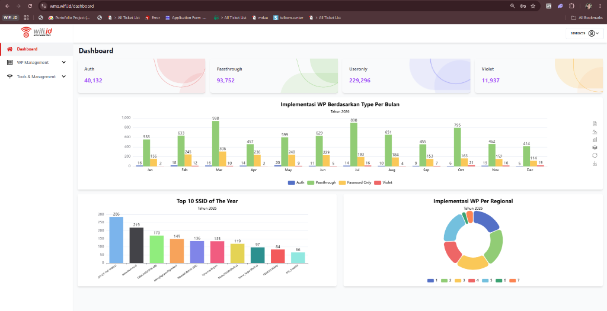
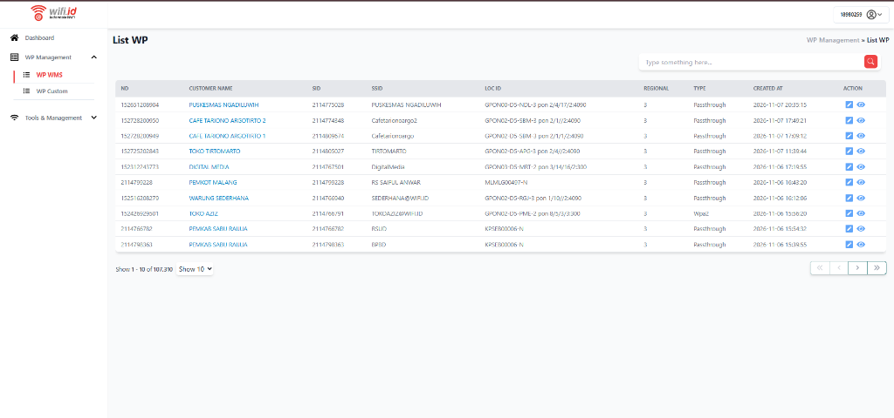
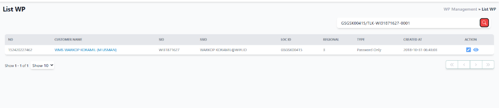
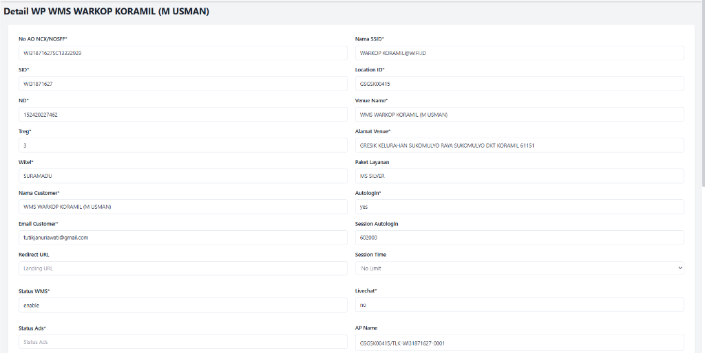
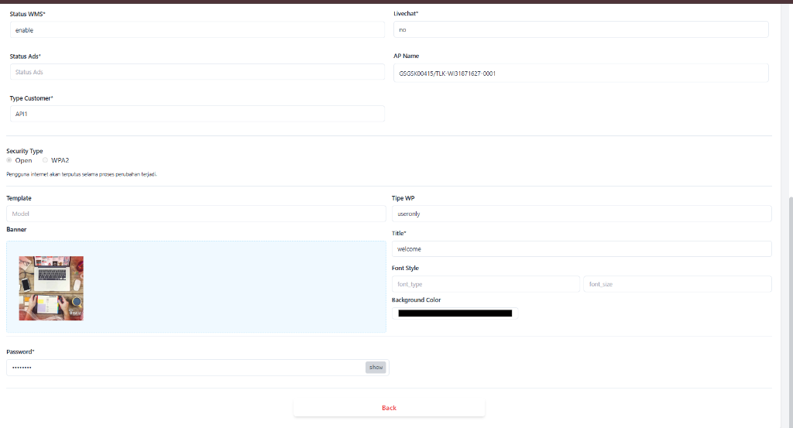
| Parameter Portal | Nilai Konfigurasi Riil | Korelasi Teknis End-to-End |
|---|---|---|
| AP Name (Location Mapping) | GSGSK00415/TLK-WI31871627-0001 | Dicocokkan oleh WAG & WLC (Hop 07 & 08) saat memanggil URL redirection welcome page |
| Location ID (LOC ID) | GSGSK00415 | Kunci pencarian utama pada database AAA RADIUS untuk menyajikan profil Warkop Koramil |
| SID / No Jastel (ND) | WI31871627 • 152420227462 | Identitas nomor billing pelanggan Telkom WMS untuk pemesanan & buka isolir (Bukis) |
| No AO NCX / NOSFF | WI31871627SC13332929 | Nomor Service Order order provisioning aktif di sistem NOS Telkom |
| Witel & Alamat Venue | SURAMADU (Gresik Sukomulyo) | Area kerja Witel Surabaya-Madura • OLT GPON04-D5-GSK-3 (Gresik) |
| Paket Layanan | MS SILVER | Profil bandwidth shaping QoS yang di-push oleh RADIUS ke WAG (CoA UDP 3799) |
| Security Type & Tipe WP | Open • Password Only (useronly) | SSID tanpa enkripsi WPA2; otentikasi ditangani via web captive portal satu sandi venue |
| Autologin & Session Time | Yes • 602.000 Detik (~7 Hari) | MAC klien disimpan di session cache WAG selama 7 hari sebelum dipaksa re-login |
Blueprint Konfigurasi Jaringan Solid dari Nol (Provisioning Guide)
Panduan langkah demi langkah bagaimana insinyur jaringan membangun, mengonfigurasi tagging VLAN, profil bandwidth, enkapsulasi MPLS, dan gateway L3 untuk layanan WiFi.id.
Tujuan: Mendaftarkan unit ONT, mengalokasikan profil bandwidth upstream (TCONT), membatasi kecepatan downstream (GEMPORT), memetakan Service-Port VLAN 195, serta memerintahkan chipset switch ONT melakukan tagging 802.1Q via protokol OMCI.
! 1. Masuk ke mode konfigurasi interface GPON ONU configure terminal interface gpon-onu_1/8/16:7 name WIFI.ID WIFI.ID description ONU-16:7-WARKOP-KORAMIL ! 2. Alokasi TCONT (DBA Profile Upstream: UP-37888KB0) tcont 1 name WMS profile UP-37888KB0 tcont 2 name VOIP profile UP-564KF5 ! 3. Alokasi GEMPORT & Bandwidth Downstream Shaping (DOWN-112640KB0 = ~112 Mbps) gemport 1 name WMS tcont 1 queue 1 gemport 1 traffic-limit downstream DOWN-112640KB0 ! 4. Service-Port Mapping: Memetakan gemport 1 ke VLAN 195 service-port 3 vport 1 user-vlan 195 vlan 195 service-port 3 description WMS-WIFI6-AP exit ! 5. Konfigurasi Port Fisik LAN ONT via OMCI Management pon-onu-mng gpon-onu_1/8/16:7 service WMS2 gemport 1 vlan 195 vlan port eth_0/1 mode tag vlan 195 <-- Tagging VLAN 195 di port LAN 1 ONT vlan port eth_0/2 mode tag vlan 195 <-- Tagging VLAN 195 di port LAN 2 ONT dhcp-ip ethuni eth_0/1 from-internet exit
Tujuan: Menerima frame VLAN 195 dari OLT pada interface LAG, membungkus frame tersebut ke dalam Virtual Switch Instance (VSI), dan mengarahkan LDP Pseudowire ke router Metro Core Kebalen.
# 1. Konfigurasi Instance VSI dengan LDP Signaling system-view vsi WIFI_6_SBU_2851 pwsignal ldp vsi-id 245132851 <-- ID Terpadu VSI Regional SBU mac-withdraw enable interface-status-change mac-withdraw enable peer 172.31.64.106 <-- Alamat Loopback Metro Core Kebalen isolate spoken quit # 2. Buat Sub-Interface Ingress dari OLT & Binding ke VSI interface Eth-Trunk2.195 description INGRESS_FROM_GPON04-D5-GSK-3 control-vid 195 dot1q-termination dot1q termination vid 195 <-- Terminasi Tag VLAN 195 dari OLT l2 binding vsi WIFI_6_SBU_2851 <-- Masukkan ke dalam VSI Tunnel statistic enable quit
Tujuan: Menerima paket MPLS dari Metro Akses, melepas label MPLS, dan menyalurkannya ke downlink port-channel menuju SWAGGR dengan tag 802.1Q nomor 2851.
# 1. Konfigurasi Static VSI dengan Peering LDP Balasan system-view vsi WIFI_6_SBU_2851 static pwsignal ldp vsi-id 245132851 mac-withdraw enable interface-status-change mac-withdraw enable peer 172.31.64.15 <-- Alamat IP Metro Akses Gresik isolate spoken quit # 2. Buat Sub-Interface Egress dot1q 2851 ke arah SWAGGR interface Eth-Trunk23.2851 description WIFI6_KBL_DOWNLINK_TO_SWAGGR vlan-type dot1q 2851 <-- Tagging dot1q keluar sebagai VLAN 2851 l2 binding vsi WIFI_6_SBU_2851 statistic enable quit
Tujuan: Menerima trunk LACP dari Metro Core, membuat VLAN 2851 di database, mengonfigurasi SVI (Switched Virtual Interface) sebagai default gateway subnet AP 10.5.130.1/23, memasang DHCP Helper, dan mengatur prioritas Spanning-Tree Rapid-PVST.
! 1. Buat VLAN 2851 di database switch configure terminal vlan 2851 name VL_AP_WLC02_KBL_WIFI6_2851 exit ! 2. Konfigurasi Port-Channel 10 (Trunk dari Metro Core) interface Port-channel10 description LAG-DOWNLINK-ME9-D5-KBL-Eth-23 switchport switchport trunk encapsulation dot1q switchport mode trunk switchport trunk allowed vlan add 2851,4035,1370,1372,1378 exit ! 3. Konfigurasi SVI Layer 3 Gateway Subnet AP WiFi 6 interface Vlan2851 description INT-VL_AP_WLC02_KBL_WIFI6_2851 ip address 10.5.130.1 255.255.254.0 <-- Default Gateway AP Subnet /23 (510 Host IP) ip helper-address 10.16.56.10 <-- Forward permintaan DHCP AP ke DHCP Server no shutdown exit ! 4. Konfigurasi Spanning-Tree Rapid-PVST (Jadikan Root Bridge untuk VLAN 2851) spanning-tree mode rapid-pvst spanning-tree vlan 2851 priority 4096 <-- Menjadikan SWAGGR sebagai STP Root Bridge exit
Tujuan: Mengonfigurasi interface dynamic VLAN 1378 (telkom.id-wag) untuk koneksi ke WAG, membuat WLAN SSID, mengelompokkan ke AP Group WARKOP_KORAMIL, dan memverifikasi registrasi CAPWAP.
# 1. Buat Interface Dynamic telkom.id-wag (VLAN 1378) config interface create telkom.id-wag 1378 config interface address dynamic-interface telkom.id-wag 172.17.67.3 255.255.255.0 172.17.67.1 config interface port telkom.id-wag 1 # 2. Buat AP Group untuk Venue Warkop Koramil config wlan apgroup add WARKOP_KORAMIL config wlan apgroup description WARKOP_KORAMIL "AP Group WMS Warkop Koramil" # 3. Masukkan Profil WLAN ke dalam AP Group & Mapping Interface config wlan apgroup vlan add WARKOP_KORAMIL 1 telkom.id-wag config wlan apgroup vlan add WARKOP_KORAMIL 2 ssid_wifi.id config wlan apgroup vlan add WARKOP_KORAMIL 3 ssid_wms # 4. Tetapkan AP Cisco C9105 ke AP Group Ini config ap group-name WARKOP_KORAMIL GSGSK00415/TLK-WI31871627-0001 save config
Tujuan: Mengonfigurasi sub-interface dot1q pada interface 10G GE6/0/0, mengaktifkan modul Broadband Access Server (BAS), menerapkan domain otentikasi portal web untuk SSID WMS & WiFi.id, serta membuka port listener CoA UDP 3799 untuk pembaruan QoS dinamis dari RADIUS.
# 1. Konfigurasi Sub-Interface WMS di GE6/0/0 (VLAN 1372 / 1382) system-view interface GigabitEthernet6/0/0.1372 description SSID_wms TO WAC06-D5-KBL-CS control-vid 1372 dot1q-termination dot1q termination vid 1372 # 2. Aktifkan BAS Subscriber Interface bas # access-type layer2-subscriber default-domain authentication wms-telkom authentication-method web # statistic enable quit # 3. Konfigurasi RADIUS Server & CoA UDP 3799 untuk WPGEN radius-server group WPGEN-AAA radius-server authentication 172.16.100.15 1812 radius-server accounting 172.16.100.15 1813 radius-server shared-key cipher TelkomWifiId2026! radius-server coa-enable radius-server coa-port 3799 quit
Tujuan: Menghubungkan trunk interkoneksi ke WAG (Port 654, 600, 678), mengonfigurasi translasi IP publik (Carrier-Grade NAT) untuk pool IP pelanggan WiFi.id, serta mengalirkan default route via eBGP peering ke Backbone IP-MPLS Telkom (AS7713).
! 1. Konfigurasi Interconnect Trunk ke WAG-D5-KBL interface GigabitEthernet654 description TRUNK-1-FROM-WAG-D5-KBL-GE1/0/0 mtu 9216 no shutdown exit ! 2. Konfigurasi CGNAT Pool untuk Egress Subscriber WiFi.id ip nat pool CGNAT-WIFIID-POOL 180.252.64.1 180.252.64.254 prefix-length 24 ip nat inside source list ACL-SUBSCRIBERS pool CGNAT-WIFIID-POOL overload ! 3. Peering eBGP ke Backbone Core Telkom Regional (AS 7713) router bgp 7713 neighbor 10.255.0.1 remote-as 7713 neighbor 10.255.0.1 description PEER-TO-CORE-IGW-SURABAYA address-family ipv4 unicast network 180.252.64.0 mask 255.255.255.0 neighbor 10.255.0.1 activate exit-address-family exit